Contenido en RRSS
Instala la alianza y presenta la X3 como noticia del torneo.
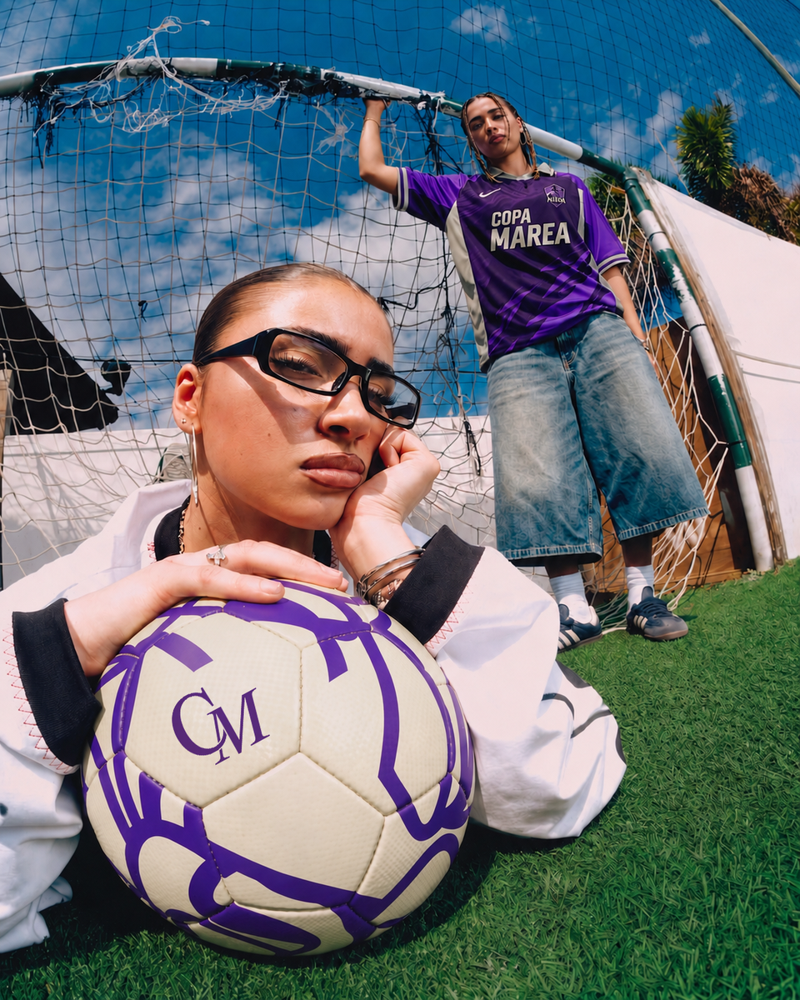
Una propuesta para integrar a Kaiyi como main sponsor de Copa Marea: contenido, presencia de marca, activaciones y una final donde la Kaiyi X3 no aparece como premio aislado, sino como parte de todo el recorrido.
Copa Marea es un torneo de futbol femenino con 8 equipos, 4 jornadas, cobertura social y una final con streaming. Para Kaiyi, el valor esta en entrar a una conversacion activa desde un lugar natural: una marca que acompaña el movimiento real de la copa, de la previa a la final.
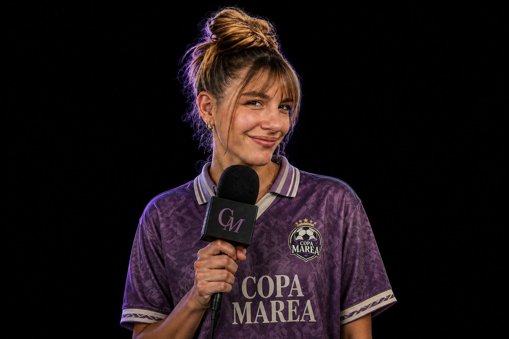
Camilita Fernandez participa como host de Copa Marea y como punto de contacto principal con una comunidad que ya consume futbol, entretenimiento y lifestyle deportivo. Kaiyi entra en esa conversacion desde contenidos nativos, momentos del torneo y escenas pensadas para redes.
Copa Marea le habla a una comunidad joven-adulta, digital, social y activa. Personas que se mueven entre deporte, contenidos, planes y decisiones de consumo donde el diseño, la experiencia y la pertenencia importan.
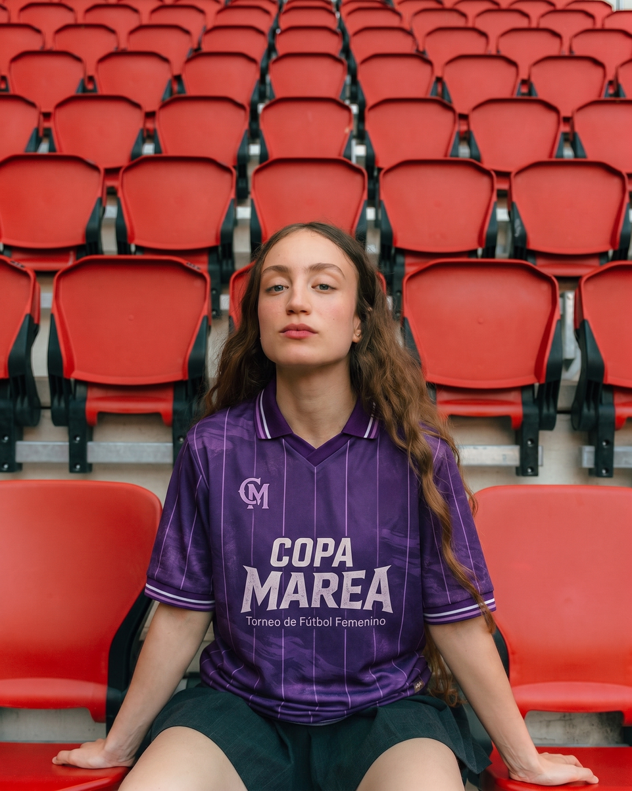
Entrena, sale, estudia, trabaja y consume contenido en fragmentos. Valora marcas que entienden ese ritmo.
No alcanza con un logo. La marca tiene que aparecer en momentos que tengan sentido dentro de la historia.
Diseño, tecnologia y una X3 protagonista para convertir movilidad en narrativa de torneo.
Un torneo de futbol femenino con equipos liderados por creadoras, pensado como plataforma de contenido. La competencia genera historia: entrenamientos, fechas, goles, entrevistas, tension, final y celebracion.
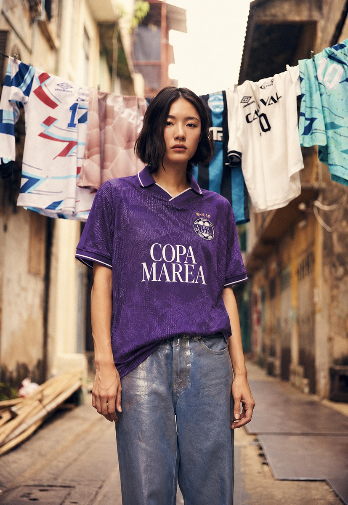
Equipos, partidos, clasificacion y final. La emocion deportiva sostiene todo lo demas.
La copa se cuenta antes, durante y despues, con codigos propios de redes.
Las marcas viven dentro del evento, el contenido, la cancha y la transmision.
Competencia continua durante fines de semana, con un recorrido diseñado para construir tension, historia y contenido en cada etapa.
Inscripcion y armado de equipos por capitanas.
Fase de grupos: 3 partidos por equipo, clasifican los mejores.
Semifinales en una jornada con las clasificadas.
Gran final transmitida en vivo.
Competencia, transmision y celebracion en un mismo momento. El climax del torneo convertido en experiencia completa.
Transmision del cierre con host, relato, momentos editoriales y produccion multicamara.
Instancias pensadas para que Kaiyi sea parte del relato: llegada, replays, cancha y premiacion.
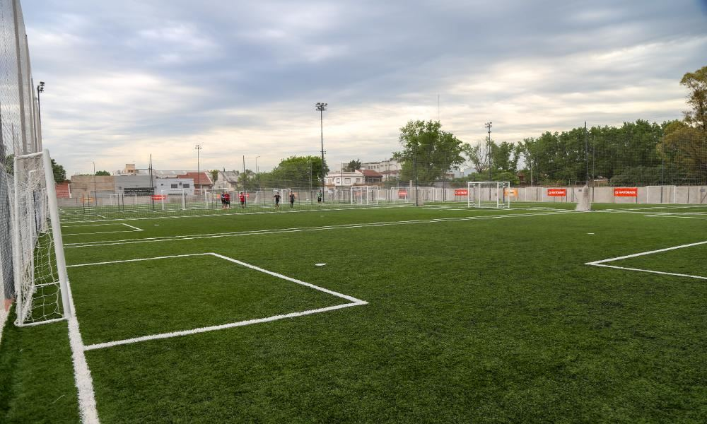
Una cancha a la altura del torneo, preparada para competencia, contenido, activaciones y presencia visual de marca.
Primero, lo que se garantiza: volumen de contenido vertical desde los canales propios. Despues, el upside: las protagonistas y creadoras amplifican la conversacion y suman caras reconocibles.
* Proyeccion estimada segun lineup final y performance organica. ** Audiencia potencial, no alcance garantizado.
La marca vive dentro del torneo: mueve la previa, aparece en cada jornada, ocupa la cancha y protagoniza la final desde contenido, streaming y premiacion.
El punto de partida es construir una estrategia donde Kaiyi aparezca en los momentos que el publico quiere mirar: anuncio, goles, llegada, replays, celebracion y premio.
La presencia principal de Kaiyi ordena el relato de marca durante todo el torneo.
La X3 funciona como imagen, traslado, contenido, activacion y premio final.
La marca no interrumpe: aparece donde el torneo naturalmente genera atencion.
La estrategia se ordena por el timing del torneo. Cada momento suma capas: primero contenido, despues presencia fisica y finalmente activaciones de streaming.
Instala la alianza y presenta la X3 como noticia del torneo.
Sostiene presencia fecha a fecha en redes, camisetas, cancha y entrevistas.
Convierte el cierre en una gran escena Kaiyi: llegada, Kaiyi Cam y premiacion.
La previa instala la alianza Copa Marea x Kaiyi y convierte a la X3 en la noticia que cambia la competencia.
Presentacion de Kaiyi como main sponsor y punto de partida de la campana.
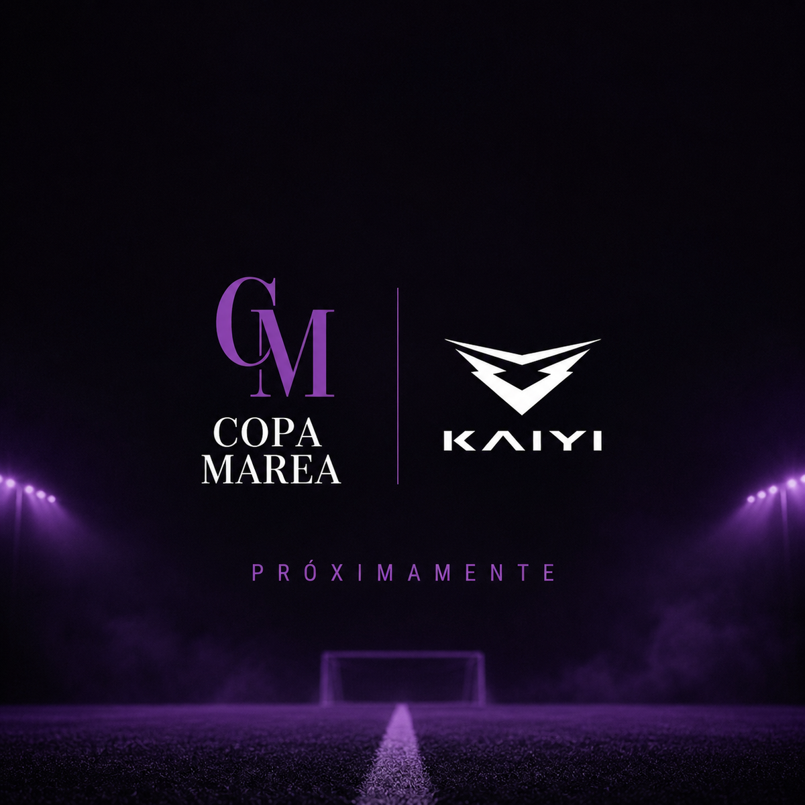
Revelacion de la Kaiyi X3 como premio y gran motor narrativo de la copa.
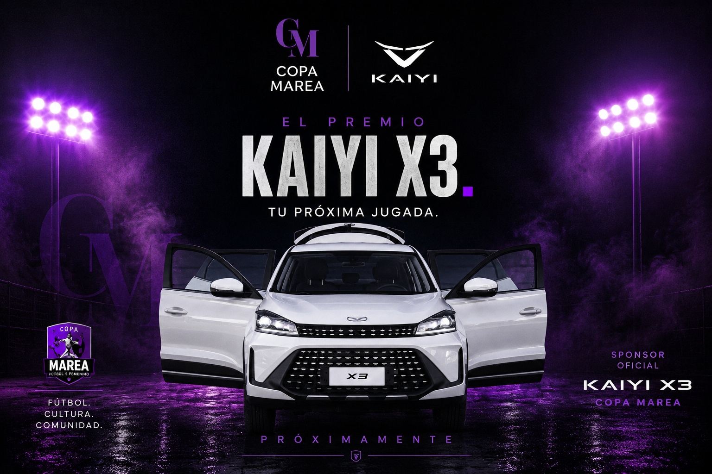
Durante el torneo, la estrategia separa contenidos de redes y espacios de branding. El objetivo es sostener presencia constante sin perder claridad en que entrega cada cosa.
Pieza vertical con los highlights de la jornada, auspiciada por Kaiyi.
1 reel semanal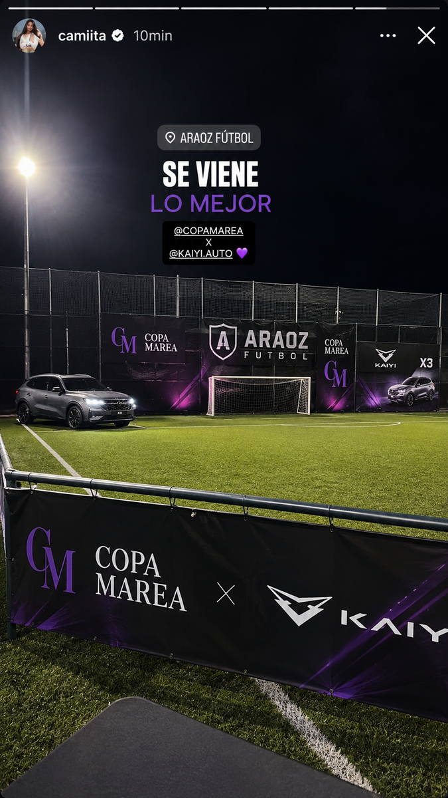
Cobertura de cada fecha con menciones a Kaiyi integradas al ritmo del torneo.
1 secuencia por jornada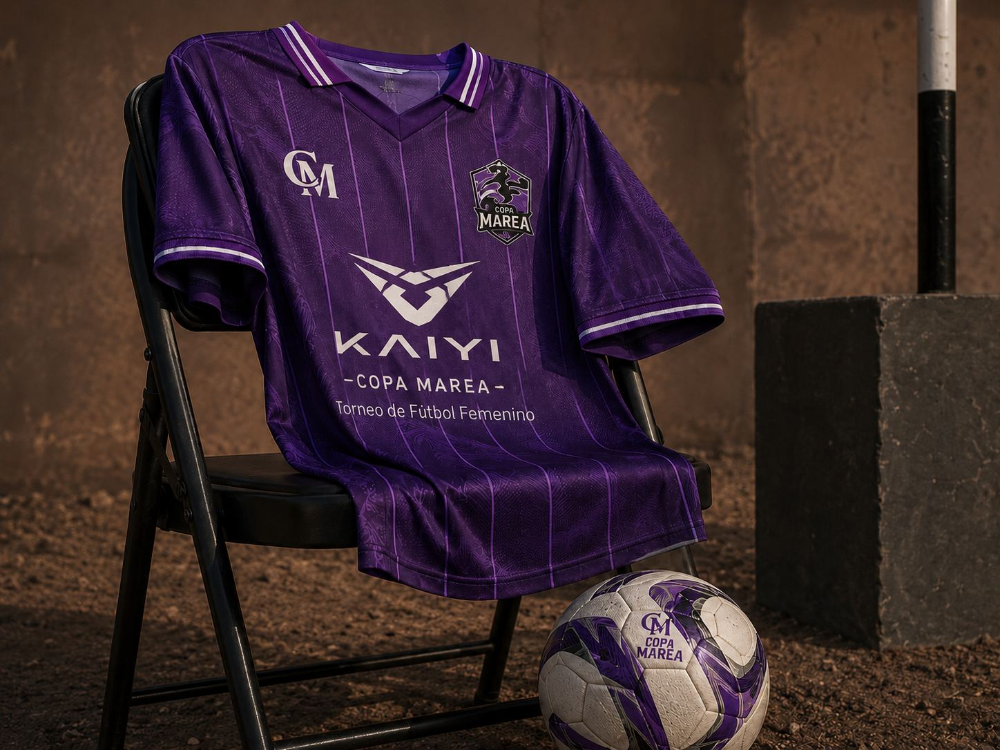
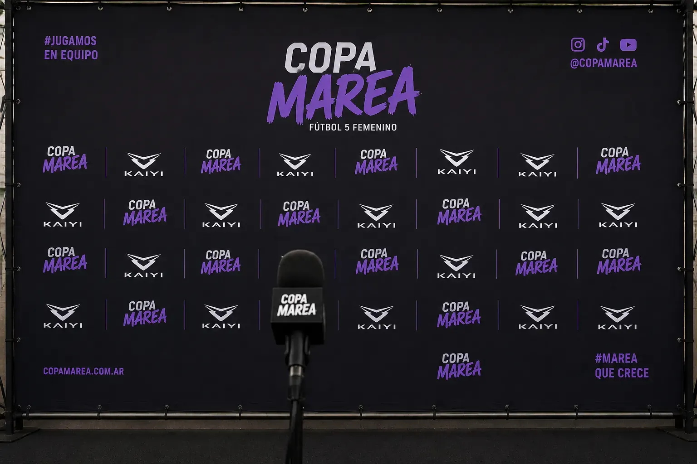
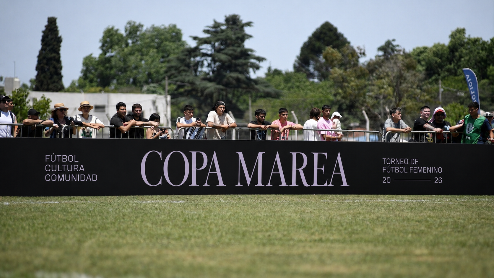
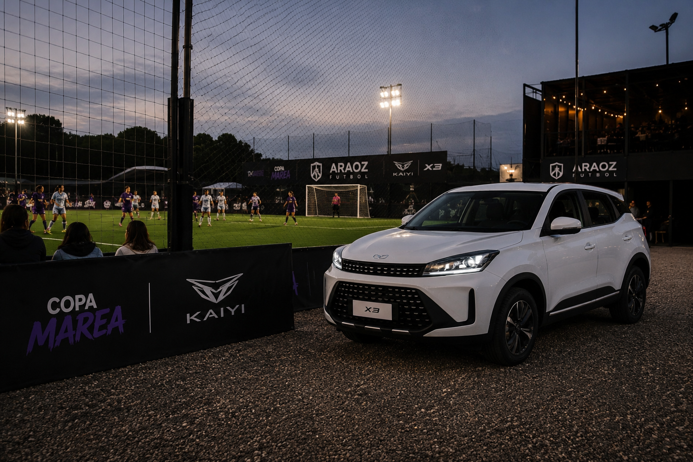
La final concentra el mayor nivel de atencion. Por eso combina contenidos de redes, presencia de marca y momentos propios dentro del streaming.
Formatos de contenido nativo pensados para que Kaiyi sea parte de la historia del cierre.
Las X3 recogen a los equipos finalistas: cabalas, playlist, nervios, mensajes y llegada al predio.
Reel largo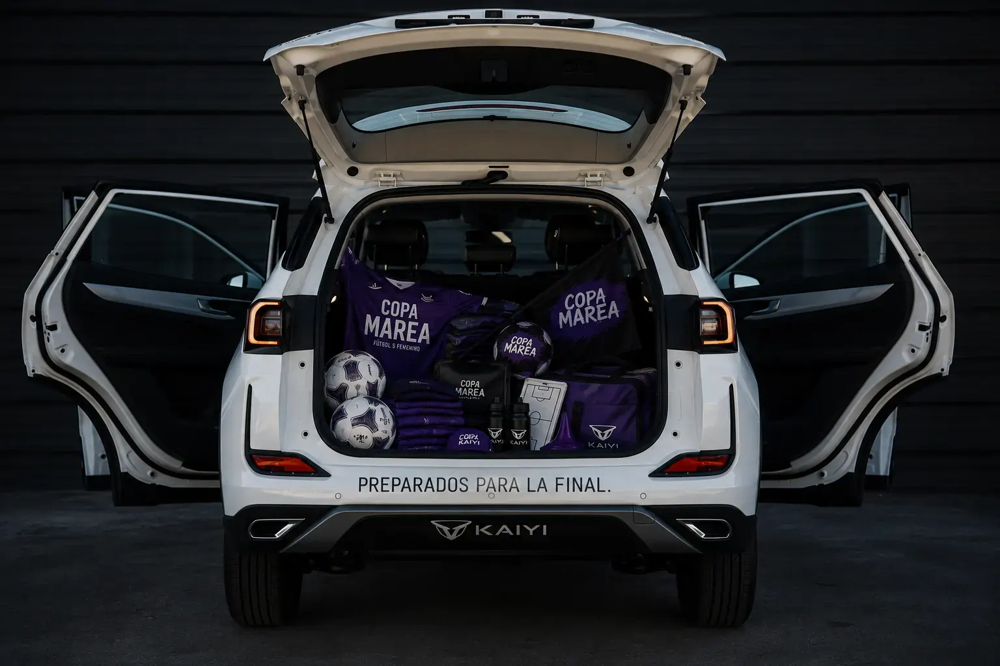
Cada equipo abre el baul de una X3 y descubre elementos sorpresa antes del partido.
Reel cortoResumen de mejores momentos, goles, celebracion y firma de marca auspiciado por Kaiyi.
Reel resumenContenido corto clipeado desde la camara inmersiva del arbitro.
Clip corto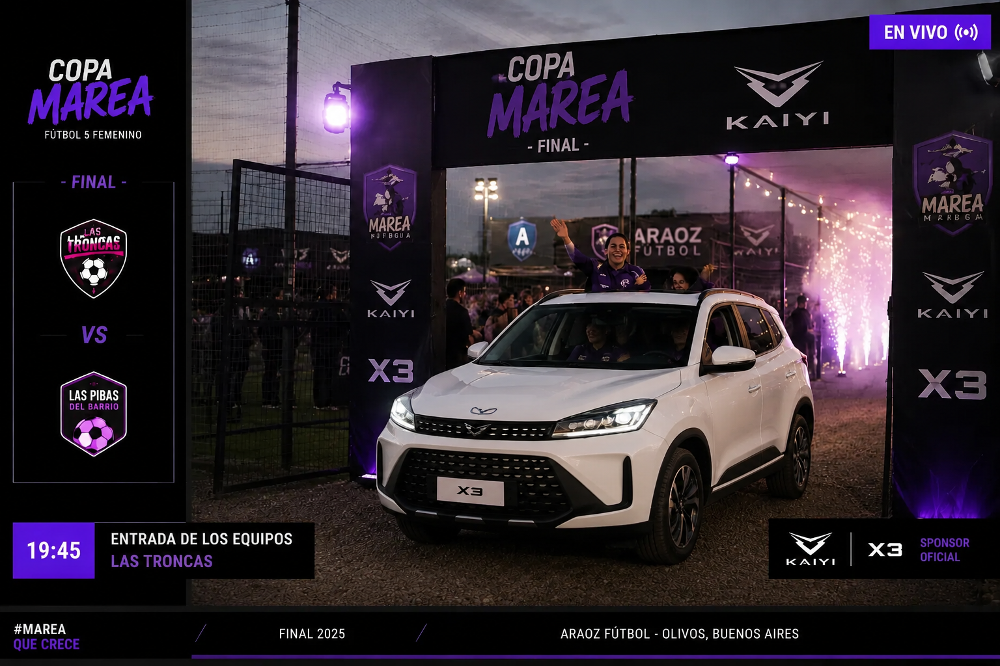
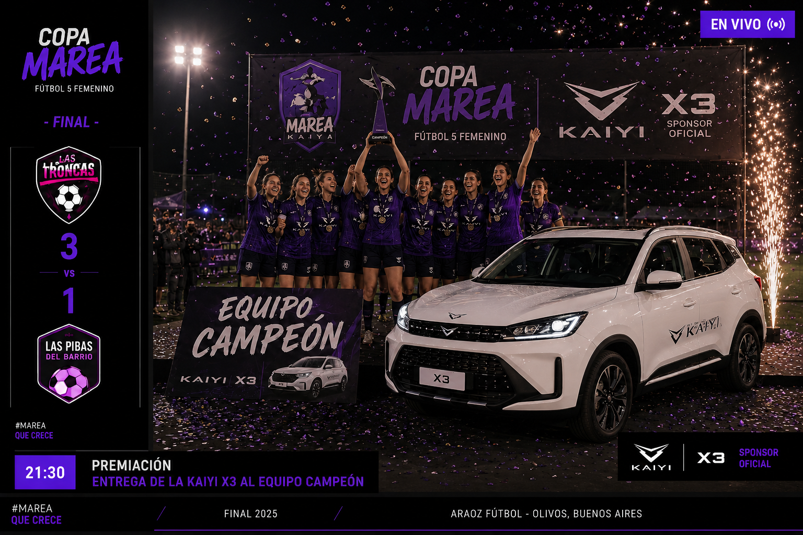
Separación entre contenidos para redes y espacios de branding / activaciones.
Kaiyi se integra a Copa Marea desde una historia real, joven y entretenida: acompaña a las jugadoras, potencia la transmision y protagoniza el cierre con una X3.
KEEP YOUNG. KEEP FUN.